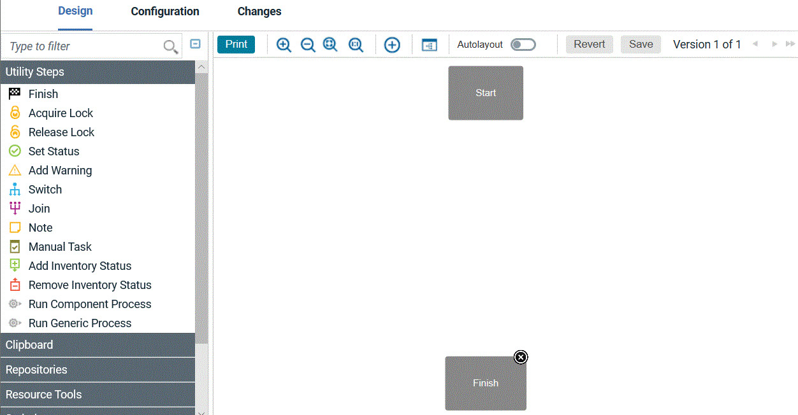
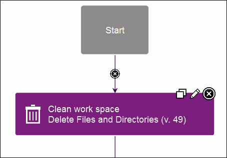
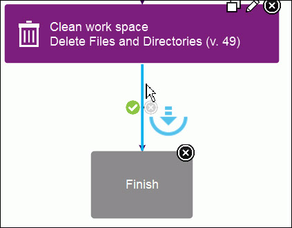
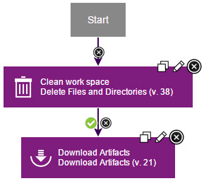
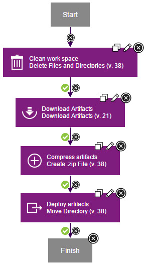

Component processes are user-defined tasks that operate
on components.
About this task
A component process is a succession of commands that are called steps. Steps can
manipulate files, run system commands, set properties, pass information to other steps, and run
programs. Steps are provided by automation plug-ins. Processes are designed with the
drag-and-drop process editor where you drag plug-in steps onto the design editor and configure them
as you go. Several plug-ins come with the product and others are available, which work with many
different types of software. In this tutorial, you use two plug-ins, both of which come with the
product: FileUtils and Deploy Versioned file storage. A component can have any number of processes
defined for it, but a component must have at least one process.
In this lesson, you create a deployment process
for the helloWorld component. Later, you create an application process
that uses the component process to deploy the component.
To
create the component process:
Procedure
- Define the component process:
-
On the "Component: helloWorld" page, click the
Processes tab, and then click Create Process.
-
In the Create Process window, type helloProcess in
the Name field.
-
Accept the default values for the other fields, and click Save.
The Default Working Directory field becomes the folder that the agent
uses to do its work, such as downloading artifacts and creating temporary files. For the tutorial,
the value becomes \agent_install\var\work\helloWorld.
The process is listed on the Processes pane.
-
Open the helloProcess process editor and go to
Design.
The process editor lists plug-ins and steps. The required
Start
and
Finish steps represent the beginning and the end of the process and are
automatically placed on the design area. You add steps to the process by dragging them onto the
design area and arranging them between the
Start and
Finish steps.

- Add a step that removes files from the working directory.
To ensure that the agent works with the most recent files, remove
files that remain from previous work:
-
In the Step Palette pane, click .
-
Click and drag the Delete Files and Directories step to the process
editor.
Click the edit properties icon

, and the
Edit Properties window opens, showing the properties for the
step. Some of these properties are unique to the step, and others are the same for all
steps.
- In the Name field, specify a
name, for example, Clean work space.
- In the Base Directory field,
specify a single period (
.).This value resolves to the folder that you specified as the agent working directory, such as
<DEPLOY_AGENT_HOME>/var/work.
-
Click the Include field, and in the Edit Text box,
specify an asterisk (
*); then, click Save.
This parameter instructs the agent to remove all files in the working directory.
-
Accept the default values for the other properties, and then click
OK.
The new step is displayed in the design area. Each step has two icons at the upper-right
corner of the step. Click the
Edit icon

to reopen the
Edit Properties window where you can modify the step
properties. Click the
X icon

to delete the step and connections to or from it.

The Start and Finish steps are
automatically connected to the step.
- Optional:
If the process step became disconnected from the Start and
Finish steps, connect the Start step to the
Clean work space step. Beginning with Start, the
connections between steps determine the process flow. You can define connections as you place steps
or later.
- Add a step to download the latest version of the component
artifacts from the CodeStation repository.
The Download
Artifacts step is used in most deployment-type processes.
This step downloads the specified version of the component artifacts
to the agent's recently cleaned working directory. When you run the
process, specify which version of the component artifacts to use.
-
Click Repositories, and under
Artifact/Deploy drag the Download
Artifacts step to the process editor.
Be sure to highlight the connection arrow when you drag the step to
the process editor so that connection arrows are automatically inserted
from the previous step to the Finish step. See the highlighted
connection arrow in this illustration:

-
Click the Edit icon , and in the Edit Properties window, accept the default values; then,
click OK.
- Optional:
If you didn't highlight the connection arrow when you dragged the step to the editor, complete
these steps:
- Delete the connection arrow between the Clean work space step and the
Finish step.
- Draw a connection from the Clean work space step to the
Download Artifacts step, and then connect the Download
Artifacts step to the Finish step.
Tip: To manually connect steps, move the mouse over one step. The arrow icon is
displayed, as the following figure shows. You use this icon to connect steps to one another.
. Click and drag the arrow icon over the subsequent step. The direction of the arrow defines
the direction of the process flow.
Except for connections from
Start, each connection has a
conditional flag. The conditional flag represents the process status that is required
before the connection can be followed. The connection is followed only if the originating step is
complete, and the specified condition is met. The possible conditions are as follows: success,
failure, or either. The default condition is success, which is represented by a green check mark, as
the following figure shows. In this example, the
Download Artifacts step is
started only if the
Clean work space step finishes with a success condition.
You can change the conditional flag by clicking the icon.

- Add a step to create a compressed file.
In this
example, the compressed file contains the files that were downloaded
in the previous step.
-
Click Utilities, and under FileUtils, drag a
Create .zip File step to the process editor.
-
In the Edit Properties window, specify the name: Compress
artifacts. (To open the Edit Properties window, the click the
Edit icon .)
- In the .zip File Name field,
type helloWorld.zip.
- In the Base Directory field,
type a single period (
.). The compressed
file is created in the agent working directory.
Note: If you specify
the final destination directory instead of the agent working directory,
the following step would be unnecessary. However, in addition to moving
the file, the following step demonstrates how to use the property
that you created earlier.
-
In the text editor that opens for the Include field, type an asterisk
(
*); then, click Save.
The compressed file contains all the files that were downloaded from the repository.
-
Accept the default values in the other fields, and click OK.
-
Verify that there is a connection from the Download Artifacts step to
the Compress artifacts step. If the steps are not connected, manually connect
them.
- Add a step to move the artifacts.
This step
moves the compressed file to the target folder. For simplicity, the
tutorial moves the file to a directory in the \helloWorld folder.
-
Expand Utilities, and under FileUtils, drag a
Move Directory step to the process editor.
- In the Edit Properties window,
specify the name Deploy artifacts.
- In the Source Directory field,
type a single period (
.).
-
In the Destination Directory field, type the following value:
${p:helloHome}/target.
The
${p:helloHome} value refers to the property that you created earlier. The
/target directory is relative to the property value. If, for example, you
defined the property value as
/home/user1/artifacts/shared/helloWorld, the file
is moved to
/home/user1/artifacts/shared/helloWorld/target. For information
about using properties, see
Properties.
-
In the text box that opens for the Include Files field, type:
*.zip; then, click Save.
-
Accept the default values in the other fields, and click OK.
-
Verify that there is a connection from the Compress artifacts step to
the Deploy artifacts step.
-
Verify that there is a connection from the Deploy artifacts step to the
Finish step.
-
Save the process by clicking Save .
Results
The complete process for the helloWorld component looks like
the following figure:

In this lesson, you created a component process to deploy the helloWorld component.
You can use component processes to automate many tasks on
components. Later in this tutorial, you create an application process
to deploy the component.